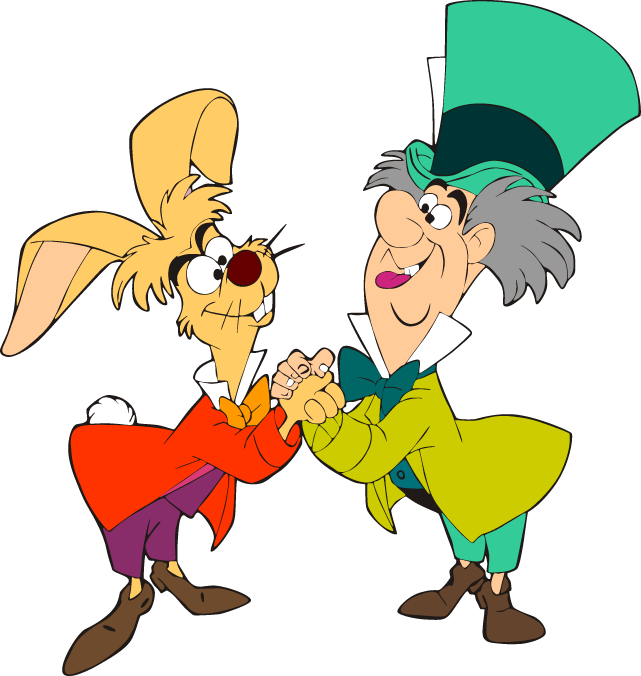
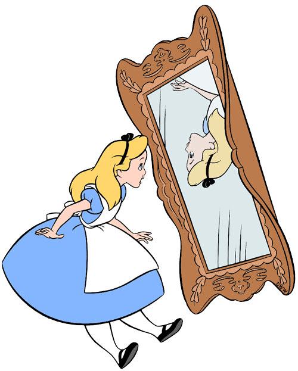
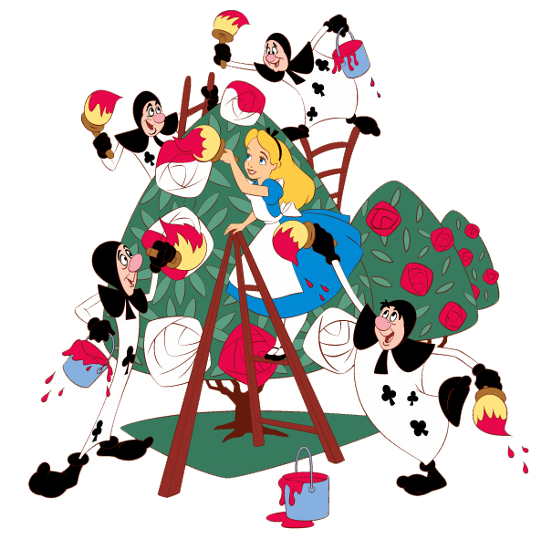
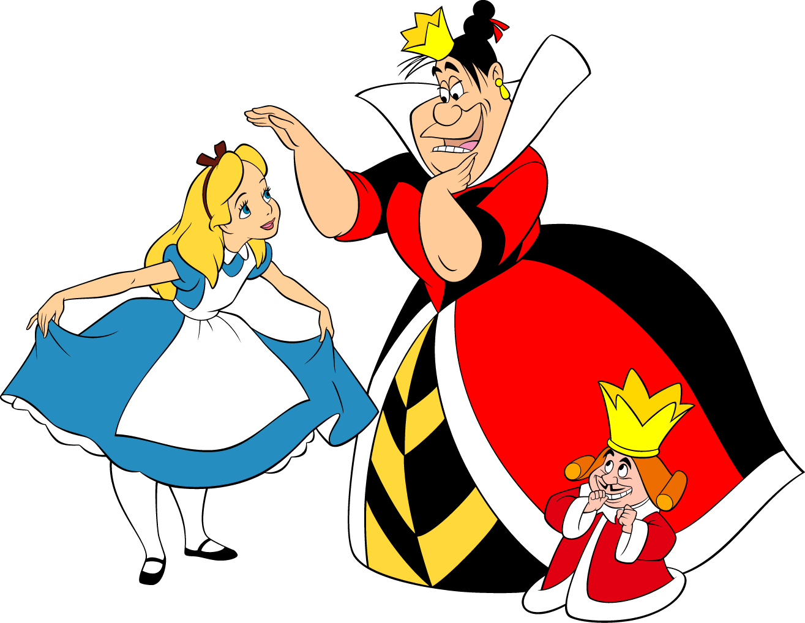
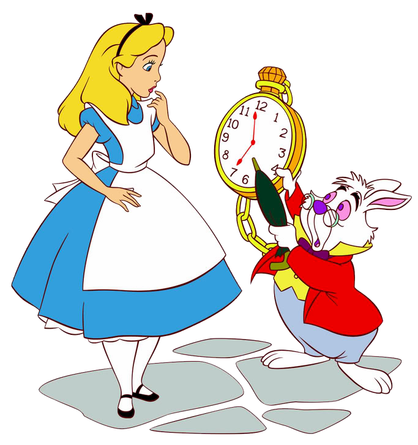
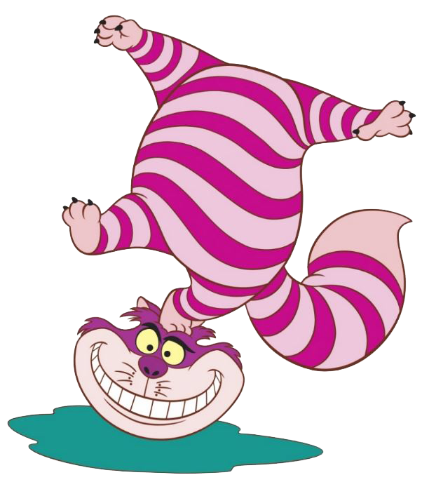

Alice nel paese
dei CSS

Come mi vedono gli altri dev
Come si sentono gli altri dev
Difficoltà
- Non deterministic resolution
- Isolation
- Global Namespace
- Dependencies
- Dead code elimination
- Sharing constants
Come sopravvivere?
- CSS Ref
- Can I use
- Stackoverflow
- Inspector del browser
Breve ripasso
Abbiamo diverse tipologie di selettori
- universal seletctor: *
- type selector: p
- class selector: .class
- ID selector: #id
- attributes selector: [attr] [attr=value]
Abbiamo la possibilità di combinare i diversi selettori fra di loro
- descendant seletctor: div a
- child selector: div > a
- adjacent sibling selector: div + a
- general sibling selectors: div ~ a
Esistono poi dei selettori per gli pseudo elements ::before, ::after e per le pseudo classi :checked, :hover, ...
Il tempo è tiranno
Spunti per la risoluzione di semplici problemi e qualche magia

Implementazione di un layout
Come posso posizionare in modo semplice gli elementi all'interno di una pagina web?
.container{
display: flex;
}
Flexbox
A cosa serve?
CSS Flexible Box Layout, commonly known as Flexbox, is a CSS3 web layout model. The flex layout allows responsive elements within a container to be automatically arranged depending upon screen size (or device)Let's start coding
Validazione form
E' possibile migliorare la UX di un modulo per la raccolta dati utilizzando solamente HTML e CSS?
Coding SoluzioneSiblings selector
E' possibile sfruttare i CSS per realizzare un sistema di rating?
Coding SoluzioneE una gallery fotografica?
SoluzioneAncora un po' di magia
Una torcia
che si accende / spegne
Soluzione
Il gioco del tris
SoluzioneBonus Track
Come posso centrare un elemento all'interno di un altro elemento?